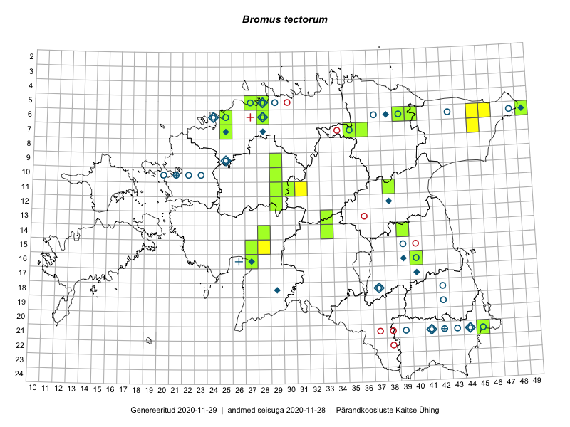

Bromus tectorum
Uuendatud: 2016-12-08
Kaardile koondatud taksonid: Bromus tectorum L.

Kaart põhineb 6 kirjel, neist vaatlusi 3 ja eksemplare 3. Taksonit on leitud 5 ruudust.
| Ruut | Vaatleja(d) | Vaatlusaeg | Kirje tüüp | Viide andmebaasikirjele |
|---|---|---|---|---|
| 21-45 | Toomas Kukk, Timo Luhamäe, Kersti Tambets, Sten Mander, Janika Sammasto | 2014-07-30 | ruut/ala | vaata PlutoFis |
| 21-45 | Toomas Kukk, Tiit Hallikma, Johannes Kõdar | 2016-06-14 | ruut/ala | vaata PlutoFis |
| 11-31 | Toivo Sepp, Peedu Saar | 2016-07-22 | punkt | vaata PlutoFis |
| 06-40 | Peedu Saar, S. Laherand | 2015-06-01 | eksemplar | vaata PlutoFis |
| 11-38 | Peedu Saar, Eerik Leibak | 2015-08-18 | eksemplar | vaata PlutoFis |
| 07-25 | Peedu Saar | 2013-06 | eksemplar | vaata PlutoFis |